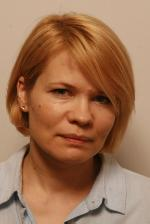

University of Latvia (UL)
The University of Latvia was founded in 1919 and currently, with its more than 14 000 students, 13 faculties and over 20 research institutes and independent study centres, is one of the largest comprehensive and leading research universities in the Baltics. The University offers more than 130 state accredited academic and professional study programmes. Bachelor’s or master’s degrees can be obtained in the following areas: humanities, pedagogy, social sciences, natural sciences, and health sciences.
The UL will be in charge of IO4 in the ErasmusX project. For more information, please visit us at: www.lu.lv
UL Team
Kristīne Bērziņa is a lecturer, researcher and senator at the University of Latvia Faculty of Economics and Management, where she is teaching Practical Entrepreneurship, International Advertising, International Economic Relations, Tourism Economy and other subjects related to international business and economics. Her research areas are linked to service industry, especially tourism industry and networking. Participating in EU projects on franchising networks, on sustainability development, she cooperates with Junior Achievement Latvia, Conncet Latvia and other youth organisations. Applied lectures, online studies, workshops, colloquiums, summer schools and study trips help her to make study process active, attractive and comprehensive. In student start-up development activities she enhances creativity as one of the skills that helps thinking out of the box and look for innovative solutions, and her standpoint is that in addition to competitive advantage study it is necessary to supplement it with collaborative advantage.

Ieva Stūrmane has been working as project manager in "Handbook of quality assurance system of UL study programmes, directions and processes based on standards and guidelines" (FUD2015/153)and "The Implementation of System of Student Tutors" (AAP2016/B084) in which tasks were development of online solutions and online courses for student support activities; and project expert in ESF project "Innovative and practice-based acquisition of teacher education and professional development of mentor" (2010/0096/1DP/1.2.1.2.3./09/IPIA/VIAA/001) and other managing related activities. The online course development skills are mainly acquired in developing and managing on-line courses in platform Moodle as part of various student support and QA activities and projects.